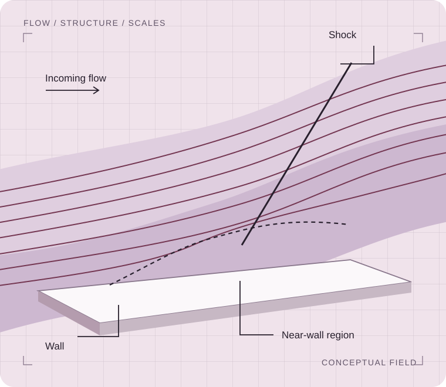

Mechanical engineering · Research fieldbook
Taskin
Mehereen.
Hypersonic flows.
Compressible turbulence.
Questions worth working through.

The working collection
A fieldbook for
high-speed turbulence.
Theory to return to. Papers to question. Data to test against. A growing, organized resource for learning and working in hypersonic compressible turbulence.
Open the collectionAbout the work
Curiosity.
Then the equations.
I’m Taskin Mehereen. My focus is hypersonic compressible turbulence, and I’m building a research practice around high-speed flows, their underlying physics, and the computational tools used to study them.
This fieldbook is part of that process: making the foundations easier to navigate, keeping assumptions visible, and turning reading into questions that can be tested.
Good questions can come from anyone. Useful knowledge should be easier to find, easier to examine, and easier to build on.